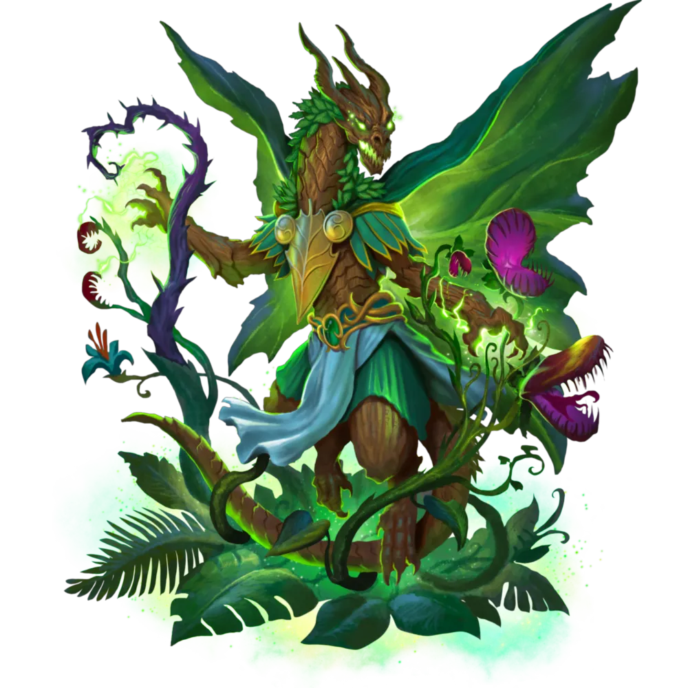

|
在众多类人种族的文化中，巨龙都是力量与强盛的象征。因此，再加上与生俱来的傲慢，巨龙往往很难承认事情出了差错。然而，有些巨龙体内奔涌着狂暴的魔法能量，这股能量一旦失控飙升，便会彻底改变它们的一生。有时，整支龙族血脉都会继承这种魔力，并在漫长的世代中延续下去。但对于这些所谓的“异类龙”而言，这股失控的能量究竟意味着什么？整个巨龙社会或许对它们不屑一顾，但它们强大的魔力却为其带来了无穷无尽的未开发潜能！ 你是一条乔木龙，出身于一脉与莱希和精类共居于森林之中、笃信吉凶征兆的木匠世系。你是莱希龙家族的一员。你的关联伤害类型为穿刺，你的吐息武器为5尺宽、30尺长的线状，需要进行敏捷豁免。你可以选择是否获得日光之力。 巨龙特质属性值提升。你的力量或智力值提升2点。 年龄。任何年龄段的巨龙都可以举行永恒之光仪式，因此哪怕是一条刚完成仪式的初生永光龙，严格来说也可能已经活了数千岁。不过，仪式澎湃的魔法能量会洗去衰老的痕迹。从仪式中苏醒的初生永光龙洋溢着青春活力与无限潜能。尽管部分学者持不同看法，但只要不死于暴力或其他灾祸，永光龙的寿命与传统派巨龙同样漫长。 阵营。永光龙的龙族血统会强烈影响其信念，但影响程度远不如同血统的传统派巨龙。例如，银永光龙往往是善良的捍卫者，而黑永光龙则往往狡诈刻薄。然而，永光龙深知龙脉并非不可违逆的宿命。任何永光龙都可以完全抛弃先祖的旧习，去开拓属于自己的道路。 体型。除非一条永光龙将自身魔力专注于增大体型（许多永光龙都会这样做），否则它们的体型并不会比常见的类人种族更大。你的体型可在小型或中型之间自选。 速度。你的基础步行速度为30尺。 黑暗视觉。你同样具备传统派巨龙的敏锐感官。在距离你60尺范围内，你可以将微光光照视作明亮光照，将黑暗视作微光光照。你在黑暗中无法分辨颜色，只能看到灰度的影像。 龙之馈赠。你从巨龙职业所列的龙之馈赠中获得一项龙之馈赠。如果某项馈赠具有先决条件，你必须满足其先决条件才能获得它。 龙类。你的生物种类为龙类，而非类人生物。 天生武器。除常规的徒手打击外，你还获得两种天生武器攻击：啃咬攻击与爪击攻击。你的啃咬攻击造成1d6点穿刺伤害；你的爪击攻击造成1d4点挥砍伤害。 你必须至少有一只手空闲才能发动爪击攻击。 你在进行爪击攻击的攻击检定和伤害掷骰时可以使用敏捷代替力量，但啃咬攻击不适用。 语言。你能够说、读、写通用语和龙语。 植物学识。你具有自然技能的熟练项。每当你为回忆有关植物的信息而进行智力（自然）检定时，你可以加上双倍的熟练加值，而非正常的熟练加值。 永光乔木龙背景设定乔木龙身形修长柔韧如蛇，四肢短小，脊背与长尾沿线层叠生长着苍翠欲滴的繁茂绿叶。它们的身躯覆有褐、白或灰色的树皮，随着年岁增长与体型变大，最外层的老树皮会像蛇蜕皮一般自然脱落。新长出的树皮会与巨龙栖息地周遭的原生树木纹理相契；倘若一条乔木龙离开故乡森林，其体表的色泽与质感便会在一生中随之改变。乔木龙极为重视自身的仪容打理，常将长满全身的枝叶精心修剪成繁复而奇巧的纹样。 大多数乔木龙都在莱希、精类及其他自然生灵的社群中安家落户；若当地森林广袤到需要多名守护者共同看护，它们也会与其他乔木龙比邻而居。乔木龙家庭很少世世代代留在同一个莱希村落里，因为即便是传统派乔木龙，年轻时有时也喜欢云游四方、见识更广阔的天地；不过，一旦它们在旅途中遇上一片缺乏强大巨龙守护者庇护、正面临文明蚕食与破坏威胁的树精或莱希森林，这段游历往往便会就此画上句号。 乔木龙素有木艺宗师的美誉，可谓实至名归。由于与树精及其他树木生灵朝夕相伴，乔木龙匠师掌握着许多奇特而讲究禁忌的传统技法，用以培育林木作为良材，并精准判断一棵树何时方可采伐。传统派乔木龙会施展精湛的木工手艺，为社群成员以及不远万里慕名登门定制的顾主打造美轮美奂的传世乐器、玩具与家具。 由于常年生活在亘古不变、永生不朽的森林化身之间，传统派乔木龙往往也感受到一种无形的期许，促使自己同样保持恒久如一，将整片森林及其中的一草一木悉心培育成自己的家园与宝库。而促使一条乔木龙决定举行永恒之光仪式的契机，往往是某位与它缔结了深厚羁绊的莱希的离去――或是那位莱希离开社群独自踏上冒险旅途，或是对方走完了这一世的旅程、重归自然怀抱并开启新一轮生命循环。永光乔木龙常将自己在永恒之光仪式后迎来的所谓“新生”，与莱希周而复始的生命轮回相提并论，尽管其他巨龙鲜少认同这一看法。 乔木龙冒险者常与出身同一社群的莱希结伴同行，成为德鲁伊，协助那些力量尚不足以独自远行的娇小莱希探索并见识大千世界。与古老强大的森林精魂或精类共享林间家园的乔木龙，有时会与这些存在缔结契约成为女巫，将故乡的智慧带上冒险旅途；而虔诚信仰古老自然神�o的乔木龙，则可能成为那些神明的牧师与神选卫士。 林间魔宠与强大的荒野精魂缔结契约的乔木龙女巫，常会获其宗主赐予微型的莱希魔宠。有时，这只魔宠本就是乔木龙早已熟识的某位莱希；但更多时候，它们是由宗主取用乔木龙自己身上的叶片与枝条亲手塑形而成的。一旦获赐，这些乔木龙便与自己忠实可靠的魔宠形影不离――谁若胆敢插足阻碍一条乔木龙与它的莱希魔宠，必将大祸临头。 延伸阅读：对应怪物图鉴：乔木龙 ・ 主书通用巨龙种族特质 ・ 巨龙职业 ・ 本卷新增龙之馈赠 |
 乔木龙（Arboreal Dragon） |